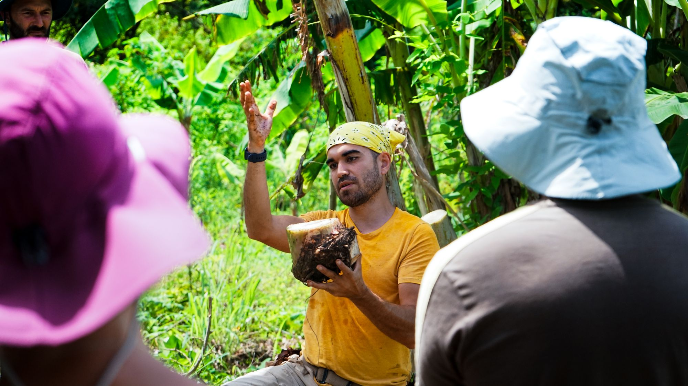
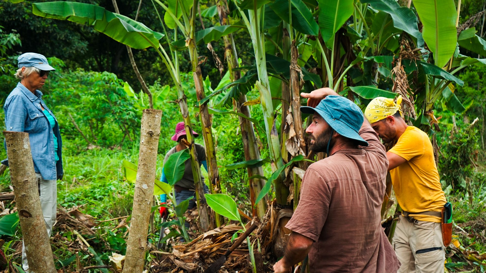
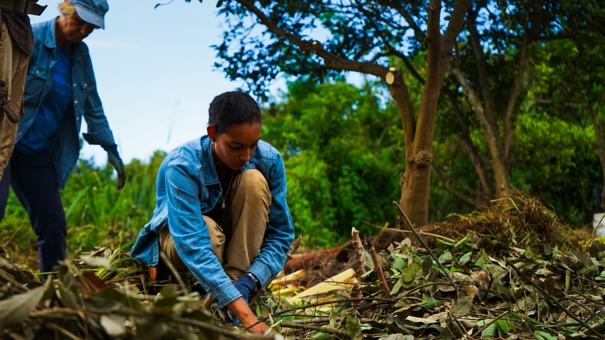
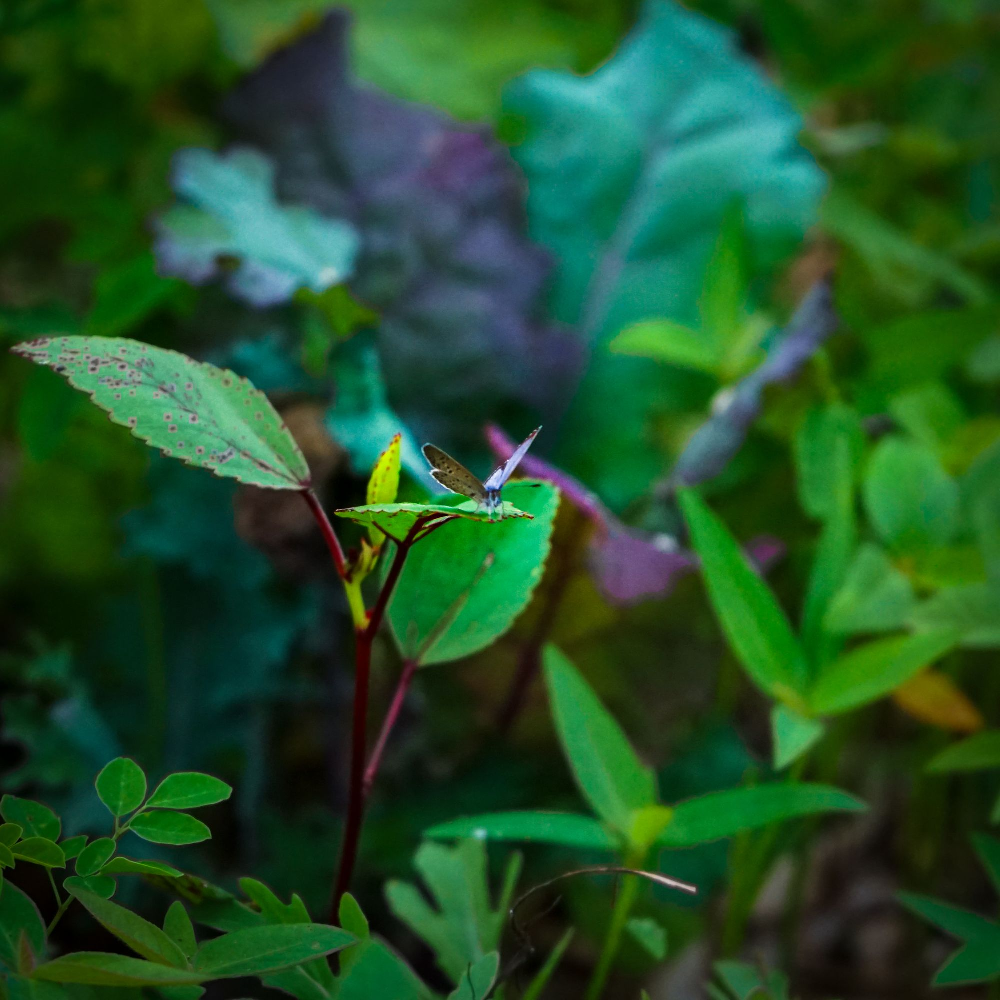
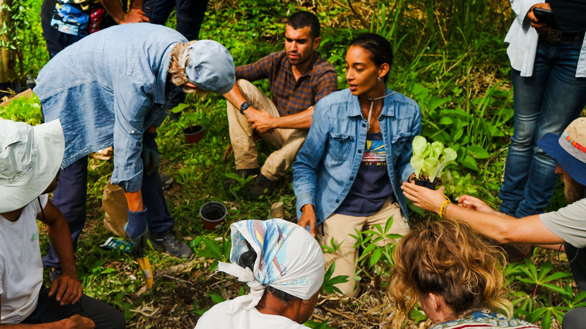
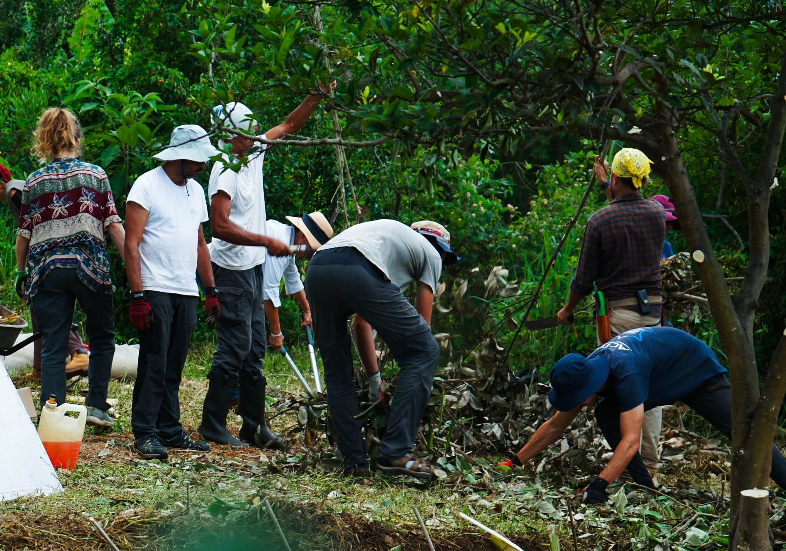

Conception de systèmes agroforestiers
- Diagnostic de site : sol, eau, relief, climat
- Plan de plantation, palette d'espèces, phasage
- Gestion de l'eau (principes Keyline)
- Budget et plan de mise en œuvre

Bwa Lontan conçoit, accompagne et forme à l'agroforesterie successionnelle, pour les collectivités, les porteurs de projets agricoles et les particuliers.
Chaque projet est différent : le sol, la pente, l'altitude, l'eau et vos objectifs décident du système. Nous intervenons à chaque étape, ou seulement là où vous en avez besoin.




Nous travaillons selon les principes de l'agriculture syntropique, développée par Ernst Götsch : une agriculture qui reproduit la dynamique naturelle de la forêt pour produire tout en régénérant le sol.
Projets alimentaires territoriaux, espaces publics nourriciers, programmes de transition agroécologique : nous concevons, formons les équipes et suivons les indicateurs dans la durée.
Basés à La Réunion, nous intervenons dans l'océan Indien : expertise en milieu tropical insulaire, ingénierie de formation et transfert de compétences aux acteurs locaux.
Installation agricole, diversification ou jardin-forêt : un projet pensé pour votre terrain, votre budget et votre temps disponible, avec un suivi jusqu'aux premières récoltes.

Formation à l'agriculture syntropique pour les agriculteurs du groupement. à compléter : date, durée, nombre de participants

Projet mené avec le projet alimentaire territorial et la commune. à compléter : objectifs, surface, réalisations

Projet avec un lycée agricole : groupe technique et étudiants impliqués dans le suivi des indicateurs. à compléter : établissement, période, indicateurs suivis

Conception et accompagnement d'un projet agricole en système agroforestier. à compléter : surface, cultures, année
Bwa Lontan est née en 2023 à La Réunion de la rencontre entre l'agronomie et la conception de systèmes. Nous travaillons sur le terrain, avec les personnes qui feront vivre le projet.
Conception, formation ou accompagnement : décrivez-nous votre terrain et vos objectifs, nous revenons vers vous sous quelques jours.